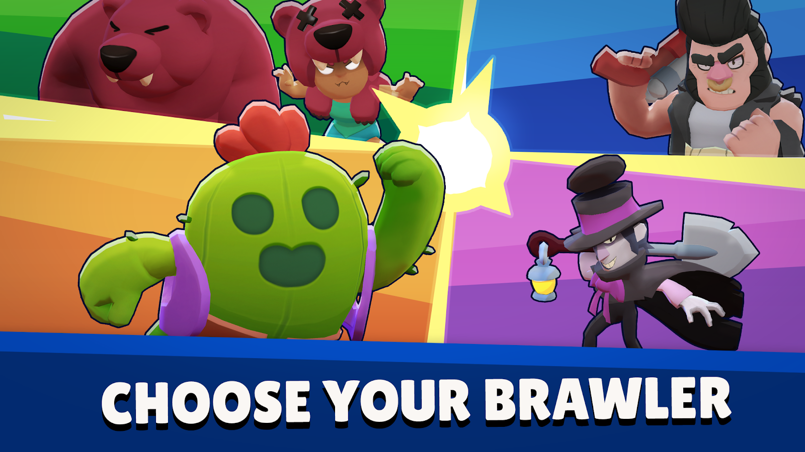
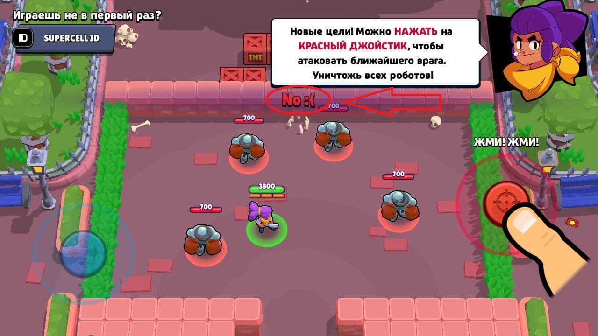

Самое первое это выбирание бравлера по карте или по режиму об этом мы поговорим уже в подразделениях
1.Самое первое и важное правило никогда НИКОГДА не используйте авто-атаку на любом Бравлере , может вам повезет и вы победите но в дальнейшем играя сза стрелка или даже за обычного Бравдера вы будете сливать юДа иногда ато-атака вам поможет но не надо брать ее в основу своих оружий для победы , надо учиться стреалть целясь.Таким образом вы можете без проблем брать 30 ранг на Джесси
